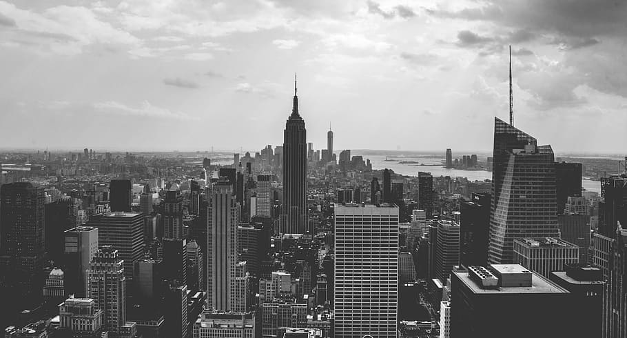
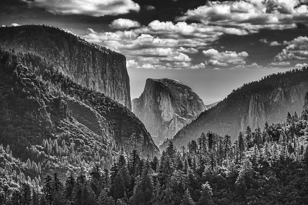
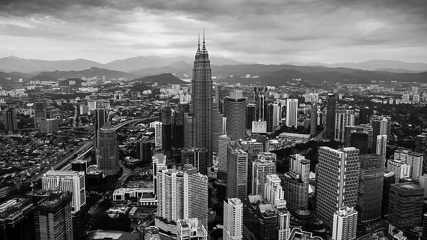

A City Where Dreams Come True

New York, often called New York City to distinguish it from New York
State, or NYC for short, is the most populous city in the United
States. With a 2020 population of 8,804,190 distributed over 302.6
square miles (784 km2), New York City is also the most
densely populated major city in the United States. Located at the
southern tip of the State of New York, the city is the center of the
New York metropolitan area, the largest metropolitan area in the
world by urban area. With almost 20 million people in its
metropolitan statistical area and approximately 23 million in its
combined statistical area, it is one of the world's most populous
megacities. New York City has been described as the cultural,
financial, and media capital of the world, significantly influencing
commerce, entertainment, research, technology, education, politics,
tourism, art, fashion, and sports, and is the most photographed city
in the world. Home to the headquarters of the United Nations, New
York is an important center for international diplomacy, and has
sometimes been called the capital of the world.
Situated on one of the world's largest natural harbors, New York
City is composed of five boroughs, each of which is a county of the
State of New York. The five boroughs are as followed:
- Brooklyn
- Queens
- Manhattan
- the Bronx
- Staten Island
The five boroughs were created when local governments were
consolidated into a single city in 1898. The city and its
metropolitan area constitute the premier gateway for legal
immigration to the United States. As many as 800 languages are
spoken in New York, making it the most linguistically diverse city
in the world. New York is home to more than 3.2 million residents
born outside the United States, the largest foreign-born population
of any city in the world as of 2016. As of 2019, the New York
metropolitan area is estimated to produce a gross metropolitan
product (GMP) of $2.0 trillion. If the New York metropolitan area
were a sovereign state, it would have the eighth-largest economy in
the world. New York is home to the highest number of billionaires of
any city in the world.
For more information of NYC, please visit
Wikipedia
A Sanctuary for Nature

Yellowstone National Park is an American national park located in
the western United States, largely in the northwest corner of
Wyoming and extending into Montana and Idaho. It was established by
the U.S. Congress and signed into law by President Ulysses S. Grant
on March 1, 1872.Yellowstone was the first national park in the U.S.
and is also widely held to be the first national park in the world.
The park is known for its wildlife and its many geothermal features,
especially Old Faithful geyser, one of its most popular. While it
represents many types of biomes, the subalpine forest is the most
abundant. It is part of the South Central Rockies forests ecoregion.
While Native Americans have lived in the Yellowstone region for at
least 11,000 years, aside from visits by mountain men during the
early-to-mid-19th century, organized exploration did not begin until
the late 1860s. Management and control of the park originally fell
under the jurisdiction of the United States Department of the
Interior, the first Secretary of the Interior to supervise the park
being Columbus Delano. However, the U.S. Army was eventually
commissioned to oversee management of Yellowstone for a 30-year
period between 1886 and 1916. In 1917, administration of the park
was transferred to the National Park Service, which had been created
the previous year. Hundreds of structures have been built and are
protected for their architectural and historical significance, and
researchers have examined more than a thousand archaeological sites.
Yellowstone National Park spans an area of 3,468.4 sq mi (8,983
km2), comprising lakes, canyons, rivers, and mountain
ranges. Yellowstone Lake is one of the largest high- elevation lakes
in North America and is centered over the Yellowstone Caldera, the
largest supervolcano on the continent. The caldera is considered a
dormant volcano. It has erupted with tremendous force several times
in the last two million years. Well over half of the world's geysers
and hydrothermal features are in Yellowstone, fueled by this ongoing
volcanism. Lava flows and rocks from volcanic eruptions cover most
of the land area of Yellowstone. The park is the centerpiece of the
Greater Yellowstone Ecosystem, the largest remaining nearly-intact
ecosystem in the Earth's northern temperate zone. In 1978,
Yellowstone was named a UNESCO World Heritage Site.
Hundreds of species of mammals, birds, fish, reptiles, and
amphibians have been documented, including several that are either
endangered or threatened. The vast forests and grasslands also
include unique species of plants. Yellowstone Park is the largest
and most famous megafauna location in the contiguous United States.
Grizzly bears, wolves, and free-ranging herds of bison and elk live
in this park. The Yellowstone Park bison herd is the oldest and
largest public bison herd in the United States. Forest fires occur
in the park each year; in the large forest fires of 1988, nearly one
third of the park was burnt. Yellowstone has numerous recreational
opportunities, including hiking, camping, boating, fishing, and
sightseeing. Paved roads provide close access to the major
geothermal areas as well as some of the lakes and waterfalls. During
the winter, visitors often access the park by way of guided tours
that use either snow coaches or snowmobiles.
Visit
Yellowstone National Park Service
for more information.
Capital of Malaysia

Kuala Lumpur (Malaysian pronunciation: ['kualə, -a 'lumpo(r),
-ʊ(r)]), officially the Federal Territory of Kuala Lumpur (Malay:
Wilayah Persekutuan Kuala Lumpur) and colloquially referred to as
KL, is a federal territory and the capital city of Malaysia. It is
the largest city in Malaysia, covering an area of 243 km2
(94 sq mi) with an estimated population of 1.73 million as of 2016.
Greater Kuala Lumpur, also known as the Klang Valley, is an urban
agglomeration of 7.564 million people as of 2018. It is among the
fastest growing metropolitan regions in Southeast Asia, in both
population and economic development.
| Area |
243 km2 |
| Elevation |
66 m |
| Founded |
1857 |
| Population |
1.808 million (2017) |
Kuala Lumpur is the cultural, financial and economic centre of
Malaysia. It is also home to the Parliament of Malaysia and the
official residence of the Yang di-Pertuan Agong, the Istana Negara.
Kuala Lumpur first developed around 1857 as a town serving the tin
mines of the region and served as the capital of Selangor from 1880
until 1978. Kuala Lumpur was the founding capital of the Federation
of Malaya and its successor Malaysia and the city remained the seat
of the executive and judicial branches of the Malaysian federal
government until these were relocated to Putrajaya in early 1999.
However, some sections of the political bodies still remain in Kuala
Lumpur.
For more information about Kuala Lumpur, visit
Wikipedia